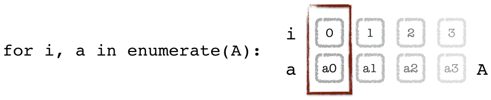
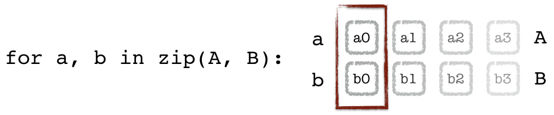
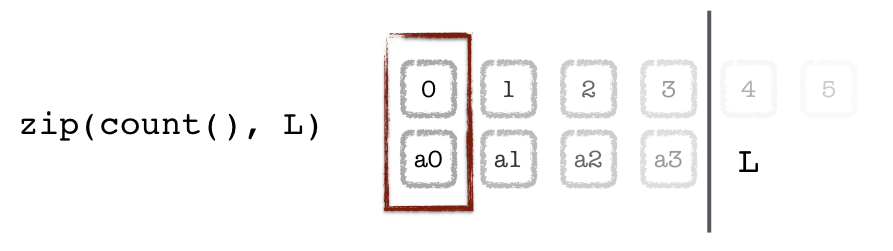
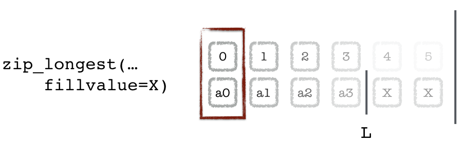

les itérations en Python¶
la boucle
forest la méthode préférée
pour itérer sur un ensemble de valeursen général préférable au
whileen Pythonon peut faire un
forsur n’importe quel itérablece n’est pas le cas pour le
whileavec
forc’est l’itérable qui se charge de la logique
de nombreuses techniques pour itérer de manière optimisée
compréhensions
itérateurs
expressions génératrices
générateurs (encore appelées fonctions génératrices)
(rappel : avec numpy, pas de
for, programmation vectorielle)
la boucle for¶
une instruction for ressemble à ceci :
for item in iterable:
bloc
aligné
d_instructions
break et continue¶
comme dans beaucoup d’autres langages :
breaksort complètement de la bouclecontinuetermine abruptement l’itération courante et passe à la suivanteon parle toujours de la boucle la plus imbriquée
l’instruction else attachée à un for est d’un usage plutôt rare en pratique
for .. else¶
en fait la forme générale de la boucle for c’est
for item in iterable:
bloc
aligné
else:
bloc # exécuté lorsque la boucle sort "proprement"
aligné # c'est-à-dire pas avec un break
mais c’est d’un usage assez rare
~~for i in range(len(truc))~~¶
liste = [10, 20, 40, 80, 120]
# la bonne façon de faire un for
for item in liste:
print(item, end=" ")
10 20 40 80 120
# et **non pas** cette
# horrible périphrase !
for i in range(len(liste)):
item = liste[i]
print(item, end=" ")
10 20 40 80 120
boucle for sur un dictionnaire¶
on peut facilement itérer sur un dictionnaire
mais il faut choisir si on veut le faire
sur les clés,
sur les valeurs,
ou sur les deux
c’est à ça que servent les méthodes
keys()values()items()
boucle for sur un dictionnaire¶
agenda = {
'paul': 12,
'pierre': 14,
'jean': 16,
}
# l'unpacking permet d'écrire
# un code élégant
for key, value in agenda.items():
print(f"{key} → {value}")
paul → 12
pierre → 14
jean → 16
# un raccourci
for key in agenda: # ou agenda.keys()
print(key, end=" ")
paul pierre jean
for value in agenda.values():
print(value, end=" ")
12 14 16
exemple de boucle¶
# pour illustrer break, et for .. else
# boucle (1)
for p in range(2, 10):
# boucle (2)
for i in range(2, p):
if p % i == 0:
print(f"{p} = {i} x {p//i}")
# on sort de la boucle (2)
break
else:
print(f"{p} est un nombre premier")
2 est un nombre premier
3 est un nombre premier
4 = 2 x 2
5 est un nombre premier
6 = 2 x 3
7 est un nombre premier
8 = 2 x 4
9 = 3 x 3
boucles for : limite importante¶
règle très importante: à l’intérieur d’une boucle
il ne faut pas modifier l’objet sur lequel on itère
on peut, par contre, en faire une copie
ce code-ci provoquerait une boucle infinie
L = ['a', 'b', 'c']
for i in L:
if i == 'c':
L.append(i)
# il suffit de prendre la précaution
# de faire une (shallow) copie
L = ['a', 'b' , 'c']
for i in L[:]:
if i == 'c':
L.append(i)
L
['a', 'b', 'c', 'c']
itérables et itérateurs¶
c’est quoi un itérable ?¶
par définition, c’est un objet .. sur lequel on peut faire un
fornotamment avec les séquences natives : chaînes, listes, tuples, ensembles
et aussi dictionnaires, et des tas d’autres objets, mais patience
# une chaine est un itérable
chaine = "un été"
for char in chaine:
print(char, end=" ")
u n é t é
# un ensemble aussi
ensemble = {10, 40, 80}
for element in ensemble:
print(element, end=" ")
40 10 80
la boucle for, mais pas que¶
on a défini les itérables par rapport à la boucle
formais plusieurs fonctions acceptent en argument des itérables
sum,max,minmap,filteretc…
L = [20, 34, 57, 2, 25]
min(L), sum(L)
(2, 138)
itérateurs¶
les itérateurs sont une sous-famille des itérables
qui présentent la particularité de consommer peu de mémoire
en fait un objet itérateur capture uniquement
la logique de l’itération, mais pas les donnéesc’est-à-dire où on en est, et comment passer au suivant
import sys
# l'exemple le plus simple
# d'itérateur est range()
R = range(1000)
sys.getsizeof(R)
48
L = list(R)
sys.getsizeof(L)
8056
cette boucle Python
for i in range(100_000):
# do stuff
est comparable à ceci en C
for (int i=0; i<100000; i++) {
/* do stuff */
}
on ne veut pas devoir allouer une liste de 100.000 éléments
juste pour pouvoir faire cette boucle
création d’itérateurs¶
Python propose des outils pour créer et combiner les itérables:
fonctions natives builtin qui créent des itérateurs:
range,enumerate, etzip
dans un module dédié
itertools:chain,cycle,islice, …
range¶
rangecrée un itérateur qui itère sur un intervalle de nombres entiersarguments : même logique que le slicing
début (inclus), fin (exclus), pas
sauf (curiosité) : si un seul argument, c’est la fin
# les nombres pairs de 10 à 20
for i in range(10, 21, 2):
print(i, end=" ")
10 12 14 16 18 20
# le début par défaut est 0
for i in range(5):
print(i, end=" ")
0 1 2 3 4
un range n’est pas une liste¶
l’objet retourné par
rangen’est pas une listeau contraire il crée un objet tout petit, un itérateur
qui contient seulement la logique de l’itération
la preuve:
# 10**20 c'est 100 millions de Tera
iterateur = range(10**20)
iterateur
range(0, 100000000000000000000)
for item in iterateur:
if item >= 5:
break
print(item, end=" ")
0 1 2 3 4
exercice: comment créer une vraie liste des entiers de 1 à 10 ?
réponse avec
list(range(1, 11))
où le type list se comporte, comme tous les types, comme une usine à fabriquer des listes
count : un itérateur infini¶
du coup un itérateur peut même .. ne jamais terminer :
# count fait partie du module itertools
from itertools import count
count?
# si on n'arrête pas la boucle nous mêmes
# ce fragment va boucler sans fin
for i in count():
print(i, end=" ")
if i >= 5:
break
0 1 2 3 4 5
enumerate¶
on a dit qu’on ne faisait jamais
for i in range(len(liste)):
item = liste[i]
print(item, end=" ")
comment faire alors si on a vraiment besoin de l’index i ?
→ il suffit d’utiliser la builtin enumerate()
L = [1, 10, 100, 1000]
for i, item in enumerate(L):
print(f"{i}: {item}")
0: 1
1: 10
2: 100
3: 1000

enumerate() …¶
typiquement utile sur un fichier
pour avoir le numéro de ligne
remarquez le deuxième argument de
enumeratepour commencer à 1
with open("data/une-charogne.txt") as feed:
for lineno, line in enumerate(feed, 1):
print(f"{lineno}:{line}", end="")
1:Rappelez-vous l'objet que nous vîmes, mon âme,
2:Ce beau matin d'été si doux:
3:Au détour d'un sentier une charogne infâme
4:Sur un lit semé de cailloux,
5:
6:Les jambes en l'air, comme une femme lubrique,
7:Brûlante et suant les poisons,
8:Ouvrait d'une façon nonchalante et cynique
9:Son ventre plein d'exhalaisons.
zip¶
zip fonctionne un peu comme enumerate mais entre deux itérables:

zip¶
liste1 = [10, 20, 30]
liste2 = [100, 200, 300]
for a, b in zip(liste1, liste2):
print(f"{a}x{b}", end=" ")
10x100 20x200 30x300
NOTES:
zipfonctionne avec autant d’arguments qu’on veutelle s’arrête dès que l’entrée la plus courte est épuisée
enumerate = zip + count¶
# par exemple on peut récrire enumerate
# à base de zip et count
L
[1, 10, 100, 1000]
# zip s'arrête dès que
# l'un de ses morceaux s'arrête
for index, item in zip(count(), L):
print(f"{index} {item}")
0 1
1 10
2 100
3 1000

un itérateur s’épuise¶
ATTENTION il y a toutefois une limite lorsqu’on utilise un itérateur
une fois que l’itérateur est arrivé à sa fin
il est “épuisé” et on ne peut plus boucler dessus
L = [1, 2]
print('pass 1')
for i in L:
print(i)
print('pass 2')
for i in L:
print(i)
pass 1
1
2
pass 2
1
2
# iter() permet de construire
# un itérateur sur un itérable
R = iter(L)
print('pass 1')
for i in R:
print(i)
print('pass 2')
for i in R:
print(i)
pass 1
1
2
pass 2
du coup par exemple,
ne pas essayer d’itérer deux fois sur un zip() ou un enumerate()
Z = zip(range(3), range(4, 7))
print('pass 1')
for a, b in Z:
print(a, b)
print('pass 2')
for a, b in Z:
print(a, b)
pass 1
0 4
1 5
2 6
pass 2
E = enumerate(L)
print('pass 1')
for a, b in E:
print(a, b)
print('pass 2')
for a, b in E:
print(a, b)
pass 1
0 1
1 2
pass 2
NB il suffit de faire e.g. for a, b in enumerate(L) pour se débarrasser du problème
le module itertools - assemblage d’itérables¶
on trouve dans le module itertools plusieurs utilitaires très pratiques :
countpour énumérer les entiers (unrangesans borne)chainpour chainer plusieurs itérablescyclepour rejouer un itérable en bouclerepeatpour énumérer plusieurs fois le même objetislicepour n’énumérer que certains morceauxzip_longestfonctionne commezipmais s’arrête au morceau le plus long
chain, cycle et repeat¶
from itertools import chain, cycle, repeat
data1 = (10, 20, 30)
data2 = (100, 200, 300)
# chain()
for i, d in enumerate(chain(data1, data2)):
print(f"{i}x{d}", end=" ")
0x10 1x20
2x30 3x100 4x200 5x300
# cycle() ne termine jamais non plus
for i, d in enumerate(cycle(data1)):
print(f"{i}x{d}", end=" ")
if i >= 10:
break
0x10 1x20 2x30 3x10 4x20 5x30 6x10 7x20 8x30 9x10 10x20
# repeat()
padding = repeat(1000, 3)
for i, d in enumerate(chain(data1, padding, data2)):
print(f"{i}x{d}", end=" ")
0x10 1x20 2x30 3x1000 4x1000 5x1000 6x100 7x200 8x300
islice¶
# avec islice on peut par exemple
# sauter une ligne sur deux dans un fichier
from pathlib import Path
# on crée un fichier
with Path('islice.txt').open('w') as f:
for i in range(6):
f.write(f"{i}**2 = {i**2}\n")
# pour ne relire qu'une ligne sur deux
from itertools import islice
with Path('islice.txt').open() as f:
for line in islice(f, 0, None, 2):
print(line, end="")
0**2 = 0
2**2 = 4
4**2 = 16
# ou zapper les 3 premières
from itertools import islice
with Path('islice.txt').open() as f:
for line in islice(f, 3, None):
print(line, end="")
3**2 = 9
4**2 = 16
5**2 = 25
# ou ne garder que les 3 premières
from itertools import islice
with Path('islice.txt').open() as f:
for line in islice(f, 3):
print(line, end="")
0**2 = 0
1**2 = 1
2**2 = 4
from itertools import zip_longest
for i, d in zip_longest(
range(6), L, fillvalue='X'):
print(f"{i} {d}")
0 1
1 2
2 X
3 X
4 X
5 X

itertools & combinatoires¶
Le module itertools propose aussi quelques combinatoires usuelles:
product: produit cartésien de deux itérablespermutations: les permutations ($n!$)combinations: p parmi net d’autres…
https://docs.python.org/3/library/itertools.html
exemple avec product¶
from itertools import product
dim1 = (1, 2, 3)
dim2 = '♡♢♤'
for i, (d1, d2) in enumerate(product(dim1, dim2), 1):
print(f"i={i}, d1={d1} d2={d2}")
i=1, d1=1 d2=♡
i=2, d1=1 d2=♢
i=3, d1=1 d2=♤
i=4, d1=2 d2=♡
i=5, d1=2 d2=♢
i=6, d1=2 d2=♤
i=7, d1=3 d2=♡
i=8, d1=3 d2=♢
i=9, d1=3 d2=♤
exercices (voir notebook séparé)
vigenere
sous le capot¶
comment marche la boucle for¶
lorsqu’on itère sur un itérable
iterable = [10, 20, 30]
sous le capot, la boucle for va faire:
créer un itérateur en appelant
iter(iterable)appeler
next()sur cet itérateurjusqu’à obtenir l’exception
StopIteration
voici un équivalent approximatif
# cette boucle for
for item in iterable:
print(item)
10
20
30
# est en gros équivalente
# à ce fragment
iterateur = iter(iterable)
while True:
try:
item = next(iterateur)
print(item)
except StopIteration:
# print("fin")
break
10
20
30
quel objet est itérable ?¶
il existe beaucoup d’objets itérables en python
tous les objets séquence: listes, tuples, chaînes, etc.
les sets, les dictionnaires
les vues (dict.keys(), dict.values()), etc.
les fichiers
les générateurs
il faut les utiliser, c’est le plus rapide et le plus lisible
quel objet est un itérateur ?¶
pour savoir si un objet est un itérateur
tester si
iter(obj) is obj
def is_iterator(obj):
return iter(obj) is obj
par exemple¶
une liste n’est pas son propre itérateur
un fichier est son propre itérateur
# un fichier est son propre itérateur
with open("data/une-charogne.txt") as F:
print(f"{is_iterator(F)=}")
is_iterator(F)=True
# la liste non
L = list(range(5))
print(f"{is_iterator(L)=}")
is_iterator(L)=False
# cycle en est un
C = cycle(L)
print(f"{is_iterator(C)=}")
is_iterator(C)=True
# un zip() est un itérateur
Z = zip(L, L)
print(f"{is_iterator(Z)=}")
is_iterator(Z)=True
Bien se souvenir : un itérateur s’épuise
de manière générale, un objet qui est un itérateur
ne peut être itéré qu’une seule fois